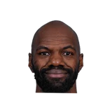

Sarah K. Spencer:Travis Schlenk on Onyeka Okongwu:
“He's an unbelievable person. Since I've been here, we've said character's at the top of our list, and he certainly checks that box in a big way.”

Every quote from Travis Schlenk about Onyeka Okongwu in the archive, newest first. Each one links to its original source.
Sarah K. Spencer:Travis Schlenk on Onyeka Okongwu:
“He's an unbelievable person. Since I've been here, we've said character's at the top of our list, and he certainly checks that box in a big way.”
Schlenk on Okongwu's offense:
“He's got unbelievable hands, he catches everything. He's got the 7ft wingspan and he can run the floor, so we're really excited about him. He's a good FT shooter so we think with time he's going to be able to extend his range.”

Travis Schlenk on Dewayne Dedmon2 quotes